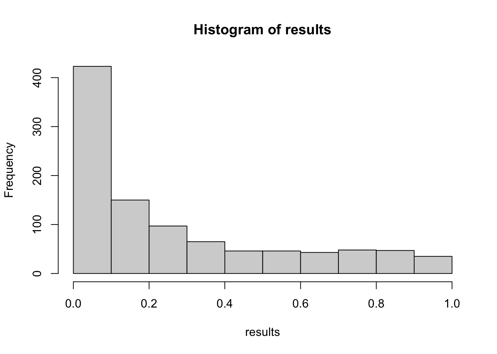

set.seed(123)
# Let's create a true world without effect:
PperGroup = 50 # number of replicates (e.g., persons per treatment group)
pC = 0.5 #probability of being cured in control group
pT = 0.5 #probability of being cured in treatment group; = same because we want to use these to get the distribution of the test statistic we define below when H0 is true (no effect)
# Let's draw a sample from this world without effect
control = rbinom(n = 1, size = PperGroup, prob = pC)
treat = rbinom(n = 1, size = PperGroup, prob = pT)
#calculate the test statistic:
treat/(treat+control)
## [1] 0.5490196
#and plot
barplot(c(control, treat), ylim = c(0, 50))3 Hypothesis Tests
In this section you will:
- get to know the most common hypothesis tests
- learn how to choose an appropriate test and interpret its result
- practice these tests in R
- practice the simulation of data and error rates
3.1 A recipe for hypothesis testing
Aim: We want to know if there is a difference between the control and the treatment
- We introduce a Null hypothesis H0 (e.g. no effect, no difference between control and treatment)
- We invent a test statistic
- We calculate the expected distribution of our test statistic given H0 (this is from our data-generating model)
- We calculate the p-value = probability of getting observed test statistic or more extreme given that H0 is true (there is no effect): \(p-value = P(d\ge D_{obs} | H_0)\)
Interpretation of the p-value
p-values make a statement on the probability of the data or more extreme values given H0 (no effect exists), but not on the probability of H0 (no effect) and not on the size of the effect or on the probability of an effect!
If you want to read more about null hypothesis testing and the p-value, take a look at Daniel Lakens Book
Example:
Imagine we do an experiment with two groups, one treatment and one control group. Test outcomes are binary, e.g. whether individuals are cured.
We need a test statistic. For example: number cured of total patients: treat/(treat+control)
We need the distribution of this test statistic under the null.
Let’s create a true world without effect:
- Now, let’s do this very often to get the distribution under H0
testStatistic = rep(NA, 100000)
for (i in 1:100000) {
control = rbinom(n = 1, size = PperGroup, prob = pC)
treat = rbinom(n = 1, size = PperGroup, prob = pT)
testStatistic[i] = control/(treat+control) # test statistic
}
hist(testStatistic, breaks = 50)
- We now have our test statistic + the frequency distribution of our statistic if the H0 = true. Now we make an experiment: Assume that we observed the following data: C = 30, T = 23.
hist(testStatistic, breaks = 50)
testStatisticData = 30/(30+23)
abline(v = testStatisticData, col = "red")
mean(testStatistic > testStatisticData)
## [1] 0.09317
# compare each value in our testStatistic distribution with
# the observed value and calculate proportion of TRUE values
# (where testStatistic > testStatisticData)But we know actually that the test statistic follows a Chi2 distribution. So to get correct p-values we can use the prop.test for this test statistic:
prop.test(c(30, 23), c(PperGroup, PperGroup))
##
## 2-sample test for equality of proportions with continuity correction
##
## data: c(30, 23) out of c(PperGroup, PperGroup)
## X-squared = 1.4452, df = 1, p-value = 0.2293
## alternative hypothesis: two.sided
## 95 percent confidence interval:
## -0.0737095 0.3537095
## sample estimates:
## prop 1 prop 2
## 0.60 0.46
# other test statistic with known distribution
# Pearson's chi-squared test statistic
# no need to simulateWe pass the data to the function which first calculates the test statistic and then calculates the p-value using the Chi2 distribution.
3.2 T-test
Originally developed by Wiliam Sealy Gosset (1876-1937) who has worked in the Guinness brewery. He wanted to measure which ingredients result in a better beer. The aim was to compare two beer recipes and decide whether one of the recipes was better (e.g. to test if it results in more alcohol). He published under the pseudonym ‘Student’ because the company considered his statistical methods as a commercial secret.
T-test assumptions
Data in both groups is normally distributed
H0 : the means of both groups are equal
The idea is that we have two normal distributions (e.g. alcohol distributions):
Code
set.seed(1)
A = rnorm(100, mean = -.3)
B = rnorm(100, mean = .3)
plot(density(A), col = "red", xlim = c(-2, 2), ylim = c(0, 0.6))
lines(density(B))
abline(v = mean(A), col = "red")
abline(v = mean(B))
And our goals is now to test if the difference between the two means of the variables is statistically significant or not.
Procedure:
Calculate variances and means of both variables
A_m = mean(A) B_m = mean(B) A_v = var(A) B_v = var(B)Calculate t-statistic (difference between means / (Standard deviation/sample size)
t_statistic = (A_m - B_m) / sqrt( A_v / length(A) + B_v / length(B)) t_statistic ## [1] -3.452108Compare observed t with t distribution under H0 (which we can do by using the CDF function of the t-distribution:
pt( t_statistic, # test statistic df = length(A)+length(B)-2, # degrees of freedom, roughly = n_obs - n_parameters lower.tail = TRUE )*2 ## [1] 0.0006799933
One-sided or two-sided
If we do NOT know if the dataset from one group is larger or smaller than the other, we must use two-sided tests (that’s why we multiply the p-values with 2). Only if we are sure that the effect MUST be positive / negative, we can test for greater / less. Decide BEFORE you look at the data!
Let’s compare it to the output of the t.test function which does everything for us, we only need to pass the data to the function:
t.test(A, B, var.equal = TRUE)
##
## Two Sample t-test
##
## data: A and B
## t = -3.4521, df = 198, p-value = 0.00068
## alternative hypothesis: true difference in means is not equal to 0
## 95 percent confidence interval:
## -0.7122549 -0.1943542
## sample estimates:
## mean of x mean of y
## -0.1911126 0.2621919Usually we also have to test for normality of our data, which we can do with another test.
Example airquality
# with real data
head(PlantGrowth)
## weight group
## 1 4.17 ctrl
## 2 5.58 ctrl
## 3 5.18 ctrl
## 4 6.11 ctrl
## 5 4.50 ctrl
## 6 4.61 ctrl
boxplot(weight ~ group, data = PlantGrowth)
ctrl = PlantGrowth$weight[PlantGrowth$group == "ctrl"]
trt1 = PlantGrowth$weight[PlantGrowth$group == "trt1"]
# attention: t test assumes normal dirstribution of measurements in both groups!
# test normality before doing the t test:
shapiro.test(ctrl)
##
## Shapiro-Wilk normality test
##
## data: ctrl
## W = 0.95668, p-value = 0.7475
shapiro.test(trt1)
##
## Shapiro-Wilk normality test
##
## data: trt1
## W = 0.93041, p-value = 0.4519
t.test(ctrl, trt1)
##
## Welch Two Sample t-test
##
## data: ctrl and trt1
## t = 1.1913, df = 16.524, p-value = 0.2504
## alternative hypothesis: true difference in means is not equal to 0
## 95 percent confidence interval:
## -0.2875162 1.0295162
## sample estimates:
## mean of x mean of y
## 5.032 4.661
# note that this is a "Welch" t-test
# we will have a look at the differences among t-tests in the next large exercise
# What is H0? equal means
# What is the result? test is not significant, H0 is not rejected
# Explain the different values in the output!
Shapiro - Test for normality
If you have a small sample size, the shapiro.test will always be non-significant (i.e. not significantly different from a normal distribution)! This is because small sample size leads to low power for rejecting H0 of normal distribution
3.3 Type I error rate
Let’s start with a small simulation example:
results = replicate(1000, {
A = rnorm(100, mean = 0.0)
B = rnorm(100, mean = 0.0)
t.test(A, B)$p.value
})
hist(results)
What’s happening here? We have no effect in our simulation but there are many p-values lower than \(\alpha = 0.05\):
mean(results < 0.05)
## [1] 0.043So in 0.043 of our experiments we would reject H0 even when there is no effect at all! This is called the type I error rate. Those are false positives.
Type I error rate and multiple testing
If there is no effect, the probability of having a positive test result is equal to the significance level \(\alpha\). If you test 20 things that don’t have an effect, you will have one significant result on average when using a significance level of 0.05. If multiple tests are done, a correction for multiple testing should be used.
This problem is called multiple testing
e.g.: if you try 20 different analyses (Null hypotheses), on average one of them will be significant.
e.g.: if you test 1000 different genes for their association with cancer, and in reality, none of them is related to cancer, 50 out of the tests will still be significant.
If multiple tests are done, a correction for multiple testing should be used
increases the p-values for each test in a way that the overall alpha level is 0.05
# conduct a t-test for each of the treatment combinations
# save each test as a new object (test 1 to 3)
control = PlantGrowth$weight[PlantGrowth$group == "ctrl"]
trt1 = PlantGrowth$weight[PlantGrowth$group == "trt1"]
trt2 = PlantGrowth$weight[PlantGrowth$group == "trt2"]
test1 = t.test(control, trt1)
test2 = t.test(control, trt2)
test3 = t.test(trt1, trt2)
c(test1$p.value, test2$p.value, test3$p.value)
## [1] 0.250382509 0.047899256 0.009298405
# now adjust these values
p.adjust(c(test1$p.value, test2$p.value, test3$p.value)) # standard is holm, average conservative
## [1] 0.25038251 0.09579851 0.02789521
p.adjust(c(test1$p.value, test2$p.value, test3$p.value), method = "bonferroni") # conservative
## [1] 0.75114753 0.14369777 0.02789521
p.adjust(c(test1$p.value, test2$p.value, test3$p.value), method = "BH") # least conservative
## [1] 0.25038251 0.07184888 0.02789521
# for details on the methods see helpIf multiple testing is a problem and if we want to avoid false positives (type I errors), why don’t we use a smaller alpha level? Because if would increase the type II error rate
3.4 Type II error rate
It can also happen the other way around:
results = replicate(1000, {
A = rnorm(100, mean = 0.0)
B = rnorm(100, mean = 0.2) # effect is there
t.test(A, B)$p.value
})
hist(results)
mean(results < 0.05)
## [1] 0.292No we wouldn’t reject the H0 in 0.708% of our experiments. This is the type II error rate (false negatives).
The type II error rate (\(\beta\)) is affected by
- sample size \(\uparrow\) , decreases \(\beta\)
- true effect size \(\uparrow\), decreases \(\beta\)
- \(\alpha\) \(\uparrow\), decreases \(\beta\)
- variability (variance) \(\uparrow\), increases \(\beta\)
After the experiment, the only parameter we could change would be the significance level \(\alpha\), but increasing it would result in too high Type I error rates.
3.5 Statistical power
We can reduce \(\alpha\) and we will get fewer type I errors (false positives), but type II errors (false negatives) will increase. So what can we do with this in practice?
1- \(\beta\) is the so called statistical power which is the rate at which a test is significant if the effect truly exists. Power increases with stronger effect, smaller variability, (larger \(\alpha\) ), and more data (sample size). So, collect more data? How much data do we need?
Before the experiment, you can estimate the effect size and the variability. Together with alpha (known), you can calculate the power depending on the sample size:
Code
results =
sapply(seq(10, 500, by = 20), function(n) {
results = replicate(100, {
A = rnorm(n, mean = 0.0)
B = rnorm(n, mean = 0.2) # effect is there
t.test(A, B)$p.value
})
power = 1 - mean(results > 0.05)
return(power)
})
plot(seq(10, 500, by = 20), results, xlab = "Sample size", ylab = "Power", main = "")
We call that a power analysis and there’s a function in R to do that:
power.t.test(n = 10, delta = 1, sd = 1, type = "one.sample")
##
## One-sample t test power calculation
##
## n = 10
## delta = 1
## sd = 1
## sig.level = 0.05
## power = 0.8030962
## alternative = two.sided
# Power increases with sample size (effect size constant, sd constant):
pow <- function(n) power.t.test(n, delta = 1, sd = 1, type = "one.sample")$power
plot(1:20, sapply(1:20, pow), xlab = "Sample size", ylab = "Power", pch = 20)
# Power increases with effect size
pow <- function(d) power.t.test(n = 20, delta = d, sd = 1,
type = "one.sample")$power
plot(seq(0,1,0.05), sapply(seq(0,1,0.05), pow), xlab = "Effect size",
ylab = "Power", pch = 20)
# Power decreases with increasing standard deviation (or variance):
pow <- function(s) power.t.test(n = 20, delta = 1, sd = s,
type = "one.sample")$power
plot(seq(0.5,1.5,0.05), sapply(seq(0.5,1.5,0.05), pow),
xlab = "Standard deviation", ylab = "Power", pch = 20)
3.6 False discovery rate
You may have realized that if we do an experiment with a (weak) effect, we can get a significant result because of the effect but also significant results because of the Type I error rate. How to distinguish between those two? How can we decide whether a significant result is a false positive? This error rate is called the false discovery rate and to lower it we need to increase the power:
\[ FDR = \frac{p(H_0)\cdot\alpha}{p(H_0)\cdot\alpha + p(!H_0)\cdot(1-\beta)} \]
\(p(H_0)\) = probability of H0 (no effect); \(p(!H_0)\) = probability of not H0 (effect exists). Both are unknown and the only parameters we can influence are \(\alpha\) and \(\beta\). But decreasing \(\alpha\) leads to too high false negatives, so \(\beta\) is left.
3.7 Statistical tests
The following three sections provide an overview over the most important hypothesis tests, a guideline to select an appropriate test (see decision tree) and the necessary code to apply these tests in R. It is not necessary to read and understand every detail. These explanations are also meant as an advice if you want to select an appropriate hypothesis test after the course. Note that some of the examples use simulated data instead of real observation (all functions that start with r=random, e.g. rnorm() or runif()). Simulated data is useful, because then we know the true distribution and its true mean.
In the last section at the end of this file, you find exercises that you should solve using the explanations above. It may be helpful to use the table of content and/or the search option to find the respective example in the explanations.
3.8 Comparison of mean of two or more groups
Many tests aim at showing that variables are significantly different between groups, i.e. have different means/medians. In all these tests, H0 is that there is no difference between the groups. The following decision tree helps to select the appropriate test.
Remark 1: Tests for 2 groups also work for one group only. Then they test whether the mean is equal to 0.
Remark 2: Paired / unpaired: this means that observations in the groups are linked to each other. An example for unpaired data is a typical experiment with 10 observations in the control group and 10 observations in the treatment group. An example for paired data is when the same individuals were exposed to the treatment and to the control. The observations of each individual would belong together (pairs).
Remark 3: Parametric: assumption of normal distribution. Non-parametric = no assumption for the distribution.
Remark 4: Blue text: If a test for more than two groups is significant, post-hoc tests are carried out in a second step. These check all possible comparisons of groups for significant differences by adjusting p-values for multiple testing.
3.8.1 Tests for 2 groups
3.8.1.1 t-Test
The t-test can draw conclusions about the mean(s) of 1 or 2 normally-distributed groups.
## Classical example: Student's sleep data
plot(extra ~ group, data = sleep)
Be aware: The line in the box plot does not show the mean but the median.
## Formula interface
t.test(extra ~ group, data = sleep)
##
## Welch Two Sample t-test
##
## data: extra by group
## t = -1.8608, df = 17.776, p-value = 0.07939
## alternative hypothesis: true difference in means between group 1 and group 2 is not equal to 0
## 95 percent confidence interval:
## -3.3654832 0.2054832
## sample estimates:
## mean in group 1 mean in group 2
## 0.75 2.33This output tells us, that the difference in means between the 2 groups is not significant(p-value ≥ 0.05, specifically: p-value = 0.07939), provided that our significance level is 0.05.
The underlying Null-hypothesis is that the true difference in means is equal to 0. In the last two lines of the output you can see the means of the respective groups. Even though the means seem to be quite different, the difference is not significant, this could be due to the small sample size of only 10 students per group.
Let’s look at different settings of the t-test:
3.8.1.1.1 t-test, H0: one group, mean = 0
The Null-hypothesis here is that the mean of the observed group is equal to 0.
x = rnorm(20, mean = 2)
t.test(x)
##
## One Sample t-test
##
## data: x
## t = 11.224, df = 19, p-value = 7.944e-10
## alternative hypothesis: true mean is not equal to 0
## 95 percent confidence interval:
## 1.786080 2.604892
## sample estimates:
## mean of x
## 2.195486p-value < 0.05 means we can reject the Null-hypothesis, i.e. the mean of the observed group is significantly different from 0.
3.8.1.1.2 t-test, H0: two groups, equal means, equal variances
The Null-hypothesis here is that the two observed groups have the same mean and the same variance (specified by the argument var.equal = T).
x1 = rnorm(20, mean = 2)
x2 = rnorm(20, mean = 3)
t.test(x1,x2, var.equal = T)
##
## Two Sample t-test
##
## data: x1 and x2
## t = -3.1484, df = 38, p-value = 0.00319
## alternative hypothesis: true difference in means is not equal to 0
## 95 percent confidence interval:
## -1.6632472 -0.3614177
## sample estimates:
## mean of x mean of y
## 2.074797 3.0871303.8.1.1.3 t-test, H0: two groups, equal means, variable variance
The Null-hypothesis here is that the two observed groups have the same mean and variable variances (the default setting of the argument var.equal = F).
x1 = rnorm(20, mean = 2, sd = 1)
x2 = rnorm(20, mean = 3, sd = 2)
t.test(x1,x2, var.equal = FALSE)
##
## Welch Two Sample t-test
##
## data: x1 and x2
## t = -2.1475, df = 30.4, p-value = 0.03984
## alternative hypothesis: true difference in means is not equal to 0
## 95 percent confidence interval:
## -1.9210146 -0.0487896
## sample estimates:
## mean of x mean of y
## 1.930744 2.915646Which is actually a Welch t-test and which is the default in R! (The smaller the samples, the more likely it is that the variances differ! So it is an conservative assumption to assume that the variances are unequal)
3.8.1.1.4 t-test, H0: two groups, paired, equal means, variance can be different
The Null-hypothesis here is that the two groups are paired observations (e.g. group 1 before treatment and group 2 after treatment) have the same mean. Variances doesn’t matter here (but the variables must be still normally distributed). We can ignore the var.equal`argument here:
x1 = rnorm(20, mean = 2)
x2 = rnorm(20, mean = 3)
t.test(x1,x2, paired = TRUE)
##
## Paired t-test
##
## data: x1 and x2
## t = -5.5876, df = 19, p-value = 2.177e-05
## alternative hypothesis: true mean difference is not equal to 0
## 95 percent confidence interval:
## -2.222268 -1.011105
## sample estimates:
## mean difference
## -1.616686If the variables are not normally distributed we have to use non-parametric tests which don’t assume a certain assumption regarding the distribution of the variables (=nonparametric). But the test statistic still follows a certain distribution!
3.8.1.2 Wilcoxon Rank Sum and Mann-Whitney U Test
In R, there is only one function for both tests together: wilcox.test(). The Wilcoxon rank sum test with (paired = F) is classically called Mann-Whitney U test.
3.8.1.2.1 Unpaired: Mann-Whitney U Test
x1 = rnorm(20, mean = 2)
x2 = rlnorm(20, mean = 3)
wilcox.test(x1, x2)
##
## Wilcoxon rank sum exact test
##
## data: x1 and x2
## W = 18, p-value = 2.317e-08
## alternative hypothesis: true location shift is not equal to 03.8.1.2.2 Paired: Wilcoxon signed rank test
x1 = rnorm(20, mean = 2)
x2 = rlnorm(20, mean = 3)
wilcox.test(x1, x2, paired = T)
##
## Wilcoxon signed rank exact test
##
## data: x1 and x2
## V = 0, p-value = 1.907e-06
## alternative hypothesis: true location shift is not equal to 03.8.2 Tests for > 2 groups
3.8.2.1 Anova, unpaired
H0 >2 groups, normal distribution, equal variance, equal means, unpaired
x = aov(weight ~ group, data = PlantGrowth)
summary(x)
## Df Sum Sq Mean Sq F value Pr(>F)
## group 2 3.766 1.8832 4.846 0.0159 *
## Residuals 27 10.492 0.3886
## ---
## Signif. codes: 0 '***' 0.001 '**' 0.01 '*' 0.05 '.' 0.1 ' ' 1An ANOVA only tests, if there is a difference, but not between which groups. To perform pairwise comparisons, you can use post-hoc tests. Common for ANOVA results is
TukeyHSD(x)
## Tukey multiple comparisons of means
## 95% family-wise confidence level
##
## Fit: aov(formula = weight ~ group, data = PlantGrowth)
##
## $group
## diff lwr upr p adj
## trt1-ctrl -0.371 -1.0622161 0.3202161 0.3908711
## trt2-ctrl 0.494 -0.1972161 1.1852161 0.1979960
## trt2-trt1 0.865 0.1737839 1.5562161 0.0120064Alternatively, you can also perform several tests each comparing two groups and then correct for multiple testing. This is what we did before.
Pairwise comparisons are often visualized using different letters to significantly different groups:
# install.packages("multcomp")
library(multcomp)
tuk = glht(x, linfct = mcp(group = "Tukey")) #performs Tukey pairwise comparisons
tuc.cld = cld(tuk) # assigns different letters to significantly different groups
old.par = par(mai = c(1, 1, 1.25, 1), no.readonly = T)
plot(tuc.cld) # draws boxplot + letters from cld function
par(old.par)3.8.2.2 Anova, paired
aov is not good in doing repeated = paired ANOVA. In simple cases, you can just subtract the paired groups. In general, you should use so-called mixed models!
3.8.2.3 Kruskal-Wallis, unpaired non-parametric
Non-parametric test for differences in the mean of >2 groups, unpaired
boxplot(Ozone ~ Month, data = airquality)
kruskal.test(Ozone ~ Month, data = airquality)
##
## Kruskal-Wallis rank sum test
##
## data: Ozone by Month
## Kruskal-Wallis chi-squared = 29.267, df = 4, p-value = 6.901e-063.8.2.4 Friedmann Test, paired non-parametric
Non-parametric test for differences in the mean of >2 groups, paired.
wb <- aggregate(warpbreaks$breaks,
by = list(w = warpbreaks$wool,
t = warpbreaks$tension),
FUN = mean)
#wb
friedman.test(wb$x, wb$w, wb$t)
##
## Friedman rank sum test
##
## data: wb$x, wb$w and wb$t
## Friedman chi-squared = 0.33333, df = 1, p-value = 0.5637
# Alternative: friedman.test(x ~ w | t, data = wb)
# Note that x is the response, w is the group, and t are the blocks that are paired3.9 Comparison of variances
H0 in variance tests is always that the variances are equal.
3.9.1 F-Test for two normally-distributed samples
x <- rnorm(50, mean = 0, sd = 2)
y <- rnorm(30, mean = 1, sd = 1)
var.test(x, y) # Do x and y have the same variance? - Significantly different
##
## F test to compare two variances
##
## data: x and y
## F = 6.1781, num df = 49, denom df = 29, p-value = 1.518e-06
## alternative hypothesis: true ratio of variances is not equal to 1
## 95 percent confidence interval:
## 3.10401 11.62354
## sample estimates:
## ratio of variances
## 6.1780793.9.2 Bartlett test for more than two normally-distributed samples
x <- rnorm(50, mean = 0, sd = 1)
y <- rnorm(30, mean = 1, sd = 1)
z <- rnorm(30, mean = 1, sd = 1)
bartlett.test(list(x, y, z)) # Do x, y and z have the same variance? - Not sigificantly different
##
## Bartlett test of homogeneity of variances
##
## data: list(x, y, z)
## Bartlett's K-squared = 11.622, df = 2, p-value = 0.0029943.10 Comparison of discrete proportions
Discrete proportions are typically analyzed assuming the binomial model (k/n with probability p)
3.10.1 Exact Binomial Test
H0 is that the data are binomially distributed with a fixed probability p.
## Conover (1971), p. 97f.
## Under (the assumption of) simple Mendelian inheritance, a cross
## between plants of two particular genotypes produces progeny 1/4 of
## which are "dwarf" and 3/4 of which are "giant", respectively.
## In an experiment to determine if this assumption is reasonable, a
## cross results in progeny having 243 dwarf and 682 giant plants.
## If "giant" is taken as success, the null hypothesis is that p =
## 3/4 and the alternative that p != 3/4.
binom.test(c(682, 243), p = 3/4)
##
## Exact binomial test
##
## data: c(682, 243)
## number of successes = 682, number of trials = 925, p-value = 0.3825
## alternative hypothesis: true probability of success is not equal to 0.75
## 95 percent confidence interval:
## 0.7076683 0.7654066
## sample estimates:
## probability of success
## 0.7372973
binom.test(682, 682 + 243, p = 3/4) # The same.
##
## Exact binomial test
##
## data: 682 and 682 + 243
## number of successes = 682, number of trials = 925, p-value = 0.3825
## alternative hypothesis: true probability of success is not equal to 0.75
## 95 percent confidence interval:
## 0.7076683 0.7654066
## sample estimates:
## probability of success
## 0.7372973
## => Data are in agreement with H03.10.2 Test of Equal or Given Proportions
based on Chi-squared-test, H0 is that the data in two groups are binomially distributed with the same probability p.
## Data from Fleiss (1981), p. 139.
## H0: The null hypothesis is that the four populations from which
## the patients were drawn have the same true proportion of smokers.
## A: The alternative is that this proportion is different in at
## least one of the populations.
smokers <- c( 83, 90, 129, 70 )
patients <- c( 86, 93, 136, 82 )
prop.test(smokers, patients)
##
## 4-sample test for equality of proportions without continuity correction
##
## data: smokers out of patients
## X-squared = 12.6, df = 3, p-value = 0.005585
## alternative hypothesis: two.sided
## sample estimates:
## prop 1 prop 2 prop 3 prop 4
## 0.9651163 0.9677419 0.9485294 0.8536585
## => Data are not in agreement with H03.10.3 Contingency tables
Chi-squared-test for count data, H~0~ is that the joint distribution of the cell counts in a 2-dimensional contingency table is the product of the row and column marginals
## From Agresti(2007) p.39
M <- as.table(rbind(c(762, 327, 468), c(484, 239, 477)))
dimnames(M) <- list(gender = c("F", "M"),
party = c("Democrat","Independent", "Republican"))
chisq.test(M)
##
## Pearson's Chi-squared test
##
## data: M
## X-squared = 30.07, df = 2, p-value = 2.954e-073.11 Distribution tests
Often we are interested in the distribution of a variable. This can be tested with distribution tests. All these tests are defined as follows: H0 is that the data follow a specific distribution. So in case H0 is rejected, the data significantly deviates from the specified distribution.
Often, we want to know whether a variable is normally distributed because this is an important assumption for parametric hypothesis tests. But data can follow many other distributions:
3.11.1 Shapiro-Wilk Normality Test
Because many tests require normal distribution, this is the test needed most often.
shapiro.test(rnorm(100, mean = 5, sd = 3))
##
## Shapiro-Wilk normality test
##
## data: rnorm(100, mean = 5, sd = 3)
## W = 0.97832, p-value = 0.098333.11.2 Kolmogorov-Smirnov Test
For everything else, the KS test can be used. It compares two different distributions, or a distribution against a reference.
x <- rnorm(50)
y <- runif(30)
# Do x and y come from the same distribution?
ks.test(x, y)
##
## Exact two-sample Kolmogorov-Smirnov test
##
## data: x and y
## D = 0.54, p-value = 1.598e-05
## alternative hypothesis: two-sided
# Does x come from a shifted gamma distribution with shape 3 and rate 2?
ks.test(x+2, "pgamma", 3, 2) # two-sided, exact
##
## Exact one-sample Kolmogorov-Smirnov test
##
## data: x + 2
## D = 0.26631, p-value = 0.001277
## alternative hypothesis: two-sided
ks.test(x+2, "pgamma", 3, 2, exact = FALSE)
##
## Asymptotic one-sample Kolmogorov-Smirnov test
##
## data: x + 2
## D = 0.26631, p-value = 0.001663
## alternative hypothesis: two-sided
ks.test(x+2, "pgamma", 3, 2, alternative = "gr")
##
## Exact one-sample Kolmogorov-Smirnov test
##
## data: x + 2
## D^+ = 0.059654, p-value = 0.6742
## alternative hypothesis: the CDF of x lies above the null hypothesisFor an overview on distribution see here: http://www.stat.umn.edu/geyer/old/5101/rlook.html
3.12 Other tests
3.12.1 Correlation
A test for the significance of a correlation:
cor.test(airquality$Ozone, airquality$Wind)
##
## Pearson's product-moment correlation
##
## data: airquality$Ozone and airquality$Wind
## t = -8.0401, df = 114, p-value = 9.272e-13
## alternative hypothesis: true correlation is not equal to 0
## 95 percent confidence interval:
## -0.7063918 -0.4708713
## sample estimates:
## cor
## -0.6015465Interpretation: Ozone and Wind are significantly negatively correlated with a p-value < 0.05 and a correlation coefficient of -0.6015465.
3.12.2 Mantel test
The Mantel test compares two distance matrices
library(vegan)
## Is vegetation related to environment?
data(varespec)
data(varechem)
veg.dist <- vegdist(varespec) # Bray-Curtis
env.dist <- vegdist(scale(varechem), "euclid")
mantel(veg.dist, env.dist)
##
## Mantel statistic based on Pearson's product-moment correlation
##
## Call:
## mantel(xdis = veg.dist, ydis = env.dist)
##
## Mantel statistic r: 0.3047
## Significance: 0.001
##
## Upper quantiles of permutations (null model):
## 90% 95% 97.5% 99%
## 0.109 0.136 0.165 0.198
## Permutation: free
## Number of permutations: 999
mantel(veg.dist, env.dist, method="spear")
##
## Mantel statistic based on Spearman's rank correlation rho
##
## Call:
## mantel(xdis = veg.dist, ydis = env.dist, method = "spear")
##
## Mantel statistic r: 0.2838
## Significance: 0.001
##
## Upper quantiles of permutations (null model):
## 90% 95% 97.5% 99%
## 0.118 0.149 0.174 0.199
## Permutation: free
## Number of permutations: 9993.13 Exercises
3.13.1 Streams
The dataset ‘streams’ contains water measurements taken at different locations along 16 rivers: ‘up’ and ‘down’ are water quality measurements of the same river taken before and after a water treatment filter, respectively. We want to find out if this water filter is effective. Use the decision tree to identify the appropriate test for this situation.
dat = read.table("https://raw.githubusercontent.com/biometry/APES/master/Data/Simone/streams.txt", header = T)Visualize and analyze the data and answer the following questions at elearning-extern (“03_Test for Exercise in R”).
- For identifying an appropriate test for the effect of the water treatment filter, what are your first two choices in the decision tree?
- The next decision you have to make is whether you can use a parametric test or not. Apply the Shapiro-Wilk test to check if the data are normally distributed. Are the tests significant and what does that tell you?
- Which test is appropriate for evaluating the effect of the filter?
- Does the filter influence the water quality? (The warnings are related to identical values, i.e. ties, and zero differences; we ignore these here)
Solution
You can visualize the data as follows:
dat = read.table("https://raw.githubusercontent.com/biometry/APES/master/Data/Simone/streams.txt", header = T)
par(mfrow = c(1, 2))
boxplot(dat)
matplot(t(dat), type = "l") # each line is one river, left is down and right is upstream
par(mfrow = c(1, 1))- The number of groups to compare is two, up versus down stream. The observations are paired because the water tested up and down stream of the filter is not independent from each other, i.e. the “same” water is measured twice!
- The Shapiro-Wilk test is significant (p < 0.05) for down stream data, i.e. we reject H0 (the data is normally distributed). Thus, the data significantly deviate from a normal distribution. The test is not significant for upstream data; the data does not significantly deviate from a normal distribution.
shapiro.test(dat$down)
##
## Shapiro-Wilk normality test
##
## data: dat$down
## W = 0.86604, p-value = 0.02367
shapiro.test(dat$up)
##
## Shapiro-Wilk normality test
##
## data: dat$up
## W = 0.93609, p-value = 0.3038- We select a Wilcoxon signed rank test that is appropriate to compare not-normal, paired observations in two groups.
- H0 of the Wilcoxon signed rank test is that the location shift between the two groups equals zero, i.e. the difference between the pairs follows a symmetric distribution around zero. As p < 0.05, we can reject H0. The filter significantly influences water quality. (In case of ties also see the function wilcox.test() in the package coin for exact, asymptotic and Monte Carlo conditional p-values)
wilcox.test(dat$down, dat$up, paired = T)
## Warning in wilcox.test.default(dat$down, dat$up, paired = T): cannot compute
## exact p-value with ties
## Warning in wilcox.test.default(dat$down, dat$up, paired = T): cannot compute
## exact p-value with zeroes
##
## Wilcoxon signed rank test with continuity correction
##
## data: dat$down and dat$up
## V = 8, p-value = 0.004971
## alternative hypothesis: true location shift is not equal to 03.13.2 Chicken
The ‘chickwts’ experiment was carried out to measure and compare the effectiveness of various feed supplements on the growth rate of chickens. We are interested in two questions: Does the feed type influence the chickens weight at all? Which feed types result in significantly different chicken weights?
dat = chickwtsAnalyze the data and answer the following questions at elearning-extern.
- Visualize the data. What is an appropriate plot for this kind of data?
- Can you apply an ANOVA to this data? What are the assumptions for an ANOVA? Remember: you have to test two things for the groups (for this exercise it is enough if you test the groups “casein” and “horsebean” only).
- Apply an ANOVA or the non-parametric test. How would you describe the result in a thesis or publication?
- Also apply the alternative test and compare p-values. Which of the tests has a higher power?
- Use the result of the ANOVA to carry out a post-hoc test. How many of the pairwise comparisons indicate significant differences between the groups?
- Which conclusion about the feed types ‘meatmeal’ and ‘casein’ is correct?
Solution
- An appropriate visualization for one numeric and one categorical variable is a boxplot. Using ‘notch = T’ in the function boxplot(), adds confidence interval for the median (the warning here indicates that we are not very confident in the estimates of the medians as the number of observations is rather small, you can see at the notches that go beyond the boxes).
dat = chickwts
boxplot(weight ~ feed, data = dat)
boxplot(weight ~ feed, data = dat, notch = T)
## Warning in (function (z, notch = FALSE, width = NULL, varwidth = FALSE, : some
## notches went outside hinges ('box'): maybe set notch=FALSE
- The two requirements for applying an ANOVA are 1) the data in each group are normally distributed, and 2) the variances of the different groups are equal. For 1) we again use a Shapiro-Wilk test. For 2) we can use the function var.test() or for all feed types the function bartlett.test(). All tests are not significant, and we thus have no indication to assume that the data is not-normally distributed or that the variances are different. We can use an ANOVA.
# get data of each group
casein = dat$weight[dat$feed == "casein"]
horsebean = dat$weight[dat$feed == "horsebean"]
shapiro.test(casein)
##
## Shapiro-Wilk normality test
##
## data: casein
## W = 0.91663, p-value = 0.2592
shapiro.test(horsebean)
##
## Shapiro-Wilk normality test
##
## data: horsebean
## W = 0.93758, p-value = 0.5264
# H0 normally distributed
# not rejected, normality assumption is okay
var.test(casein, horsebean)
##
## F test to compare two variances
##
## data: casein and horsebean
## F = 2.7827, num df = 11, denom df = 9, p-value = 0.1353
## alternative hypothesis: true ratio of variances is not equal to 1
## 95 percent confidence interval:
## 0.711320 9.984178
## sample estimates:
## ratio of variances
## 2.782737
# H0 ratio of variances is 1 = groups have the same variance
# not rejected, same variances is okay
### Extra: testing the assumptions for all groups:
# Normality test using the dplyr package
library(dplyr)
##
## Attaching package: 'dplyr'
## The following object is masked from 'package:MASS':
##
## select
## The following objects are masked from 'package:stats':
##
## filter, lag
## The following objects are masked from 'package:base':
##
## intersect, setdiff, setequal, union
dat %>%
group_by(feed) %>%
summarise(p = shapiro.test(weight)$p)
## # A tibble: 6 × 2
## feed p
## <fct> <dbl>
## 1 casein 0.259
## 2 horsebean 0.526
## 3 linseed 0.903
## 4 meatmeal 0.961
## 5 soybean 0.506
## 6 sunflower 0.360
# Bartlett test for equal variances
bartlett.test(weight ~ feed, dat)
##
## Bartlett test of homogeneity of variances
##
## data: weight by feed
## Bartlett's K-squared = 3.2597, df = 5, p-value = 0.66- H0 of the ANOVA is that feed has no influence on the chicken weight. As p < 0.05, we reject H0. In the result section, we would write something like: “The feed type significantly influenced the chicken weight (ANOVA, p = 5.94e-10).”
fit = aov(weight ~ feed, data = dat)
summary(fit)
## Df Sum Sq Mean Sq F value Pr(>F)
## feed 5 231129 46226 15.37 5.94e-10 ***
## Residuals 65 195556 3009
## ---
## Signif. codes: 0 '***' 0.001 '**' 0.01 '*' 0.05 '.' 0.1 ' ' 1- The non-parametric alternative of an ANOVA is the Kruskal-Wallis test, which should be applied if the data is not normally distributed. In this example, the test comes to the same conclusion: H0 is rejected, the feed type has a significant effect on the chicken weight. The p-value, however, is not as small as in the ANOVA. The reason for this is that non-parametric tests have a lower power than parametric ones as they only use the ranks of the data. Therefore, the ANOVA is preferred over the non-parametric alternative in case its assumptions are fulfilled.
kruskal.test(chickwts$weight, chickwts$feed)
##
## Kruskal-Wallis rank sum test
##
## data: chickwts$weight and chickwts$feed
## Kruskal-Wallis chi-squared = 37.343, df = 5, p-value = 5.113e-07- From the 15 comparisons among feed types, 8 are significantly different.
TukeyHSD(fit)
## Tukey multiple comparisons of means
## 95% family-wise confidence level
##
## Fit: aov(formula = weight ~ feed, data = dat)
##
## $feed
## diff lwr upr p adj
## horsebean-casein -163.383333 -232.346876 -94.41979 0.0000000
## linseed-casein -104.833333 -170.587491 -39.07918 0.0002100
## meatmeal-casein -46.674242 -113.906207 20.55772 0.3324584
## soybean-casein -77.154762 -140.517054 -13.79247 0.0083653
## sunflower-casein 5.333333 -60.420825 71.08749 0.9998902
## linseed-horsebean 58.550000 -10.413543 127.51354 0.1413329
## meatmeal-horsebean 116.709091 46.335105 187.08308 0.0001062
## soybean-horsebean 86.228571 19.541684 152.91546 0.0042167
## sunflower-horsebean 168.716667 99.753124 237.68021 0.0000000
## meatmeal-linseed 58.159091 -9.072873 125.39106 0.1276965
## soybean-linseed 27.678571 -35.683721 91.04086 0.7932853
## sunflower-linseed 110.166667 44.412509 175.92082 0.0000884
## soybean-meatmeal -30.480519 -95.375109 34.41407 0.7391356
## sunflower-meatmeal 52.007576 -15.224388 119.23954 0.2206962
## sunflower-soybean 82.488095 19.125803 145.85039 0.0038845- The experiment did not reveal a significant weight difference between the feed types ‘meatmeal’ and ‘casein’. Remember that we cannot prove or accept H0; we can only reject it.
3.13.3 Titanic
The dataset ‘titanic’ from the EcoData package (not to confuse with the dataset ‘Titanic’) provides information on individual passengers of the Titanic.
library(EcoData) #or: load("EcoData.Rdata"), if you had problems with installing the package
dat = titanicAnswer the following questions at elearning-extern.
- We are interested in first and second class differences only. Reduce the dataset to these classes only. How can you do this in R?
- Does the survival rate between the first and second class differ? Hint: you can apply the test to a contigency table of passenger class versus survived, i.e.
table(dat$pclass, dat$survived). - Is the variable passenger age normally distributed?
- Is the variable Body Identification Number (body) uniformly distributed?
- Is the correlation between fare and age significant?
Solution
- The dataset can be reduced in different ways. All three options result in a dataset with class 1 and 2 only.
library(EcoData)
dat = titanic
dat = dat[dat$pclass == 1 | dat$pclass == 2, ]
dat = dat[dat$pclass %in% 1:2, ] # the same
dat = dat[dat$pclass != 3, ] # the same- We use the test of equal proportions here. H0, proportions in the two groups are equal, is rejected. The survival probability in class 1 and class 2 is significantly different. Note that the estimated proportions are for mortality not for survival because 0=died is in the first column of the table. Thus it is considered the “success” in the prop.test().
table(dat$pclass, dat$survived)
##
## 0 1
## 1 123 200
## 2 158 119
prop.test(table(dat$pclass, dat$survived))
##
## 2-sample test for equality of proportions with continuity correction
##
## data: table(dat$pclass, dat$survived)
## X-squared = 20.772, df = 1, p-value = 5.173e-06
## alternative hypothesis: two.sided
## 95 percent confidence interval:
## -0.2717017 -0.1074826
## sample estimates:
## prop 1 prop 2
## 0.3808050 0.5703971- The distribution of passenger age significantly differs from normal.
hist(dat$age, breaks = 20)
shapiro.test(dat$age)
##
## Shapiro-Wilk normality test
##
## data: dat$age
## W = 0.9876, p-value = 0.00014- The distribution of body significantly differs from uniform.
hist(dat$body, breaks = 20)
ks.test(dat$body, "punif")
##
## Exact one-sample Kolmogorov-Smirnov test
##
## data: dat$body
## D = 1, p-value = 2.22e-16
## alternative hypothesis: two-sided- The correlation between fare and age is non-significant. You can also plot the data using the scatter.smooth function.
cor.test(dat$fare, dat$age)
##
## Pearson's product-moment correlation
##
## data: dat$fare and dat$age
## t = 1.9326, df = 543, p-value = 0.0538
## alternative hypothesis: true correlation is not equal to 0
## 95 percent confidence interval:
## -0.001346105 0.165493055
## sample estimates:
## cor
## 0.08265257
scatter.smooth(dat$fare, dat$age)
3.13.4 Simulation of Type I and II error
This is an additional task for those who are fast! Please finish the other parts first and submit your solution in elearning-extern before you continue here!
Analogously to the previous example of simulating the test statistic, we can also simulate error rates. Complete the code …
PperGroup = 50
pC = 0.5
pT = 0.5
pvalues = rep(NA, 1000)
for(i in 1:1000){
control = rbinom(n = 1, size = PperGroup, prob = pC)
treat = rbinom(n = 1, size = PperGroup, prob = pT)
#XXXX
}… and answer the following questions for the prop.test in R:
How does the distribution of p-values and the number of false positive (Type I error) look like if pC = pT
How does the distribution of p-values and the number of true positive (Power) look like if pC != pT, e.g. 0.5, 0.6
How does the distribution of p-values and the number of false positive (Type I error) look like if you modify the for loop in a way that you first look at the data, and then decide if you test for greater or less?
Solution
Analogously to our previous example with simulating the test statistic, we can also simulate the error rates. This is the completed code the different examples:
- pC = pT
PperGroup = 50
pC = 0.5
pT = 0.5
pvalues = rep(NA, 1000)
positives = rep(NA, 1000)
for(i in 1:1000){
control = rbinom(1, PperGroup, prob = pC )
treatment = rbinom(1, PperGroup, prob = pT )
pvalues[i] = prop.test(c(control, treatment), rep(PperGroup, 2))$p.value
positives[i] = pvalues[i] <= 0.05
}
hist(pvalues)
table(positives)
## positives
## FALSE TRUE
## 952 48
mean(positives)
## [1] 0.048
# type I error rate = false positives (if data simulation etc. is performed several times, this should be on average 0.05 (alpha))- pC != pT with difference 0.1
PperGroup = 50
pC = 0.5
pT = 0.6
pvalues = rep(NA, 1000)
positives = rep(NA, 1000)
for(i in 1:1000){
control = rbinom(1, PperGroup, prob = pC )
treatment = rbinom(1, PperGroup, prob = pT )
pvalues[i] = prop.test(c(control, treatment), rep(PperGroup, 2))$p.value
positives[i] = prop.test(c(control, treatment), rep(PperGroup, 2))$p.value < 0.05
}
hist(pvalues)
table(positives)
## positives
## FALSE TRUE
## 857 143
mean(pvalues < 0.05) # = power (rate at which effect is detected by the test)
## [1] 0.143
# power = 1- beta > beta = 1-power = typeII error rate
1-mean(pvalues < 0.05)
## [1] 0.857
## Factors increasing power and reducing type II errors:
# - increase sample size
# - larger real effect size (but this is usually fixed by the system)- You first look at the data, and then decide if you test for greater or less:
# ifelse(test,yes,no)
PperGroup = 50
pC = 0.5
pT = 0.5
for(i in 1:1000){
control = rbinom(1, PperGroup, prob = pC )
treatment = rbinom(1, PperGroup, prob = pT )
pvalues[i] = prop.test(c(control, treatment), rep(PperGroup, 2),
alternative= ifelse(mean(control)>mean(treatment),
"greater","less"))$p.value
positives[i] = prop.test(c(control, treatment), rep(PperGroup, 2),
alternative= ifelse(mean(control)>mean(treatment),
"greater","less"))$p.value < 0.05
}
hist(pvalues)
table(positives)
## positives
## FALSE TRUE
## 953 47
mean(pvalues < 0.05)
## [1] 0.047
# higher false discovery rate